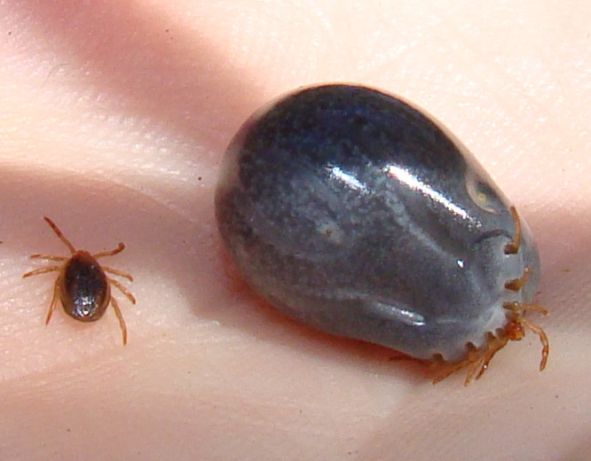

📑 Contents
Tick Bites — Mammalian Meat Allergy
Ticks in Australia are not just a nuisance — they can cause paralysis, severe allergic reactions, and a permanent allergy to red meat. The Australian paralysis tick (Ixodes holocyclus) is one of the most medically significant ticks in the world, and the mammalian meat allergy (alpha-gal syndrome) was first described in Australia, where it is more common than anywhere else.
1. Australian Paralysis Tick (Ixodes holocyclus)

Australian Paralysis Tick (Ixodes holocyclus) — before and after feeding. The engorged tick on the right contains approximately 5mL of blood. Image: Wikimedia Commons (CC BY-SA).- Distribution: Eastern Australia — QLD, NSW, VIC coastal strip, especially the band from Brisbane to Sydney
- Most medically important tick in Australia
- Hazards: Can cause fatal paralysis (especially in children), severe allergic reactions, tick typhus, and mammalian meat allergy
- Season: All year round, peak August–February (spring/summer)
2. Tick Removal — The Critical Technique
DO NOT Use These Methods
- Squeezing the body (injects more venom)
- Metho, kerosene, nail polish, alcohol (all irritate the tick, causing it to inject more)
- Matches, lighter, or heat (tick injects venom when it feels threatened)
- Twisting or jerking the tick (mouthparts break off)
Correct Technique: Adult Ticks
- Use fine-tipped tweezers or a dedicated tick removal tool (available from pharmacies)
- Grasp the tick as close to the skin as possible — behind the head, not the body
- Pull straight out with steady, gentle pressure — do NOT twist or jerk
- If mouthparts break off: remove what you can, clean the wound, and monitor. The remaining parts will work out on their own or be absorbed over weeks
Correct Technique: Small Ticks (Larvae/Nymphs — "Grass Ticks")
Small ticks cannot be grasped with tweezers. The recommended method:
- Use Wart-Off aerosol (dimethyl ether/propane) or similar ether-based freeze spray
- Hold the spray 1-2cm from the tick and freeze for 10 seconds
- Wait for the tick to die
- Brush off — the tick should fall away
After Removal
- Clean the wound with antiseptic
- Mark the date on a calendar — note it in your phone. This is important for monitoring symptom onset
- Watch for any rash, fever, weakness, or unusual symptoms in the days following
3. Tick Paralysis
- Caused by a neurotoxin secreted by the tick's salivary glands
- Tick must be attached for 4+ days to cause paralysis (not an immediate effect)
- More common in children (small body mass makes them more susceptible)
Symptoms (in order of onset)
- Unsteady gait — walking like a drunk (ataxia)
- Ascending paralysis — starts in the legs, moves up the body
- Facial weakness — drooping eyelids, difficulty with facial expressions
- Difficulty swallowing and slurred speech
- Respiratory failure — in severe cases
Treatment
- Remove the tick — symptoms typically improve within hours
- Full recovery usually occurs over days
- Any progressive weakness after a tick bite requires immediate hospital assessment
4. Tick-Induced Anaphylaxis
Repeated tick bites can sensitise a person, leading to anaphylaxis on subsequent bites. This is distinct from tick paralysis (toxin-mediated) and alpha-gal syndrome (delayed food allergy).
Recognition: - Symptoms begin within minutes of tick attachment (unlike paralysis, which takes days) - Difficulty breathing, wheezing - Swelling of tongue, throat, or face - Hives or widespread rash - Dizziness, collapse - Nausea, vomiting
This is a medical emergency. Treat as anaphylaxis: 1. Remove the tick immediately (do not delay for freeze method — the trigger must be removed) 2. Administer adrenaline (EpiPen) — outer mid-thigh 3. Call 000 / activate PLB 4. If no improvement after 5 minutes, give second adrenaline dose 5. Position: lie flat with legs elevated (unless breathing difficulty — then sit supported) 6. Monitor continuously
After emergency treatment: Seek medical assessment. People who have had tick anaphylaxis should carry 2 EpiPens and avoid known tick habitats.
See Anaphylaxis for complete anaphylaxis management.
5. Mammalian Meat Allergy (Alpha-Gal Syndrome)
This is Australia-specific knowledge. The condition was first described in Australia and is more common here than anywhere else in the world. Any guide to tick bites is incomplete without understanding this.
How It Happens
- A tick bite (usually from Ixodes holocyclus) triggers the immune system to produce IgE antibodies against alpha-gal (galactose-alpha-1,3-galactose)
- Alpha-gal is a carbohydrate found in ALL mammalian meat
- When the person later eats mammalian meat, the immune system reacts
Symptoms (3-6 hours after eating meat)
- Hives (urticaria) and swelling (angioedema)
- Breathing difficulty
- Anaphylaxis (can be severe)
- Gastrointestinal symptoms: abdominal pain, nausea, diarrhoea, vomiting
Meats That Contain Alpha-Gal
- All mammals: beef, lamb, pork, kangaroo, venison, goat, rabbit
- Gelatine (derived from mammal collagen) — found in lollies, marshmallows, jelly, some medications
- Dairy products may trigger some people
Safe Foods
- Chicken, turkey, duck
- Fish and seafood
- Eggs
- Fruits, vegetables, grains
- Plant-based proteins
Key Differences From Typical Food Allergies
- Delayed onset: 3-6 hours after eating (typical food allergy is minutes)
- Triggered by carbohydrates, not proteins (rare for food allergens)
- Co-factor dependent: exercise, alcohol, or NSAIDs taken near the time of eating can trigger more severe reactions
Diagnosis
- Clinical diagnosis based on history of tick bite + delayed reaction to meat
- Blood test for alpha-gal IgE antibodies (available from pathology labs)
- No definitive diagnostic threshold — clinical history is most important
Management
- Avoid all mammalian meat — completely. Even small amounts can trigger reaction
- Carry antihistamines + EpiPen if prescribed
- Over time (2-5 years for some people), the allergy may fade if no further tick bites occur
- Each new tick bite resets the clock — avoidance of tick bites is critical
6. Other Tick-Borne Diseases
| Disease | Cause | Distribution | Symptoms | Treatment |
|---|---|---|---|---|
| Queensland Tick Typhus | Rickettsia australis | Eastern Australia | Fever, headache, eschar (black sore) at bite site, rash | Doxycycline |
| Flinders Island Spotted Fever | Rickettsia honei | Southern Australia, Tasmania | Fever, headache, rash, eschar | Doxycycline |
| Australian Spotted Fever | Rickettsia marmionii | NSW, QLD | Flu-like, rash | Doxycycline |
Lyme Disease in Australia
- Lyme disease is NOT endemic in Australia. Local ticks do not carry Borrelia burgdorferi (the Lyme-causing bacterium)
- Any "Lyme disease" diagnoses in Australia are highly controversial and not supported by evidence-based medicine
- If you have been overseas and develop Lyme symptoms, this is a separate issue — seek specialist assessment
7. Prevention
- Wear long sleeves and long pants, tuck pants into socks in tick habitat
- Light-coloured clothing makes ticks easier to see and remove before they attach
- DEET repellent on exposed skin (at least 20-30% concentration)
- Permethrin treatment on clothing — lasts through several washes. Available at outdoor stores
- Daily tick checks — especially skin folds: armpits, groin, behind ears, scalp, waistline
- Treat pets for ticks — they bring ticks inside the vehicle and home
- Check children carefully — they often do not notice ticks
Cross-References
- Anaphylaxis — EpiPen use, severe allergic reaction management
- Spider Bites — Other venomous Australian arthropods
- Marine Stingers — Marine venom comparison
- Outback First Aid — General first aid for bites and stings
- Emergency Services — How to call for help